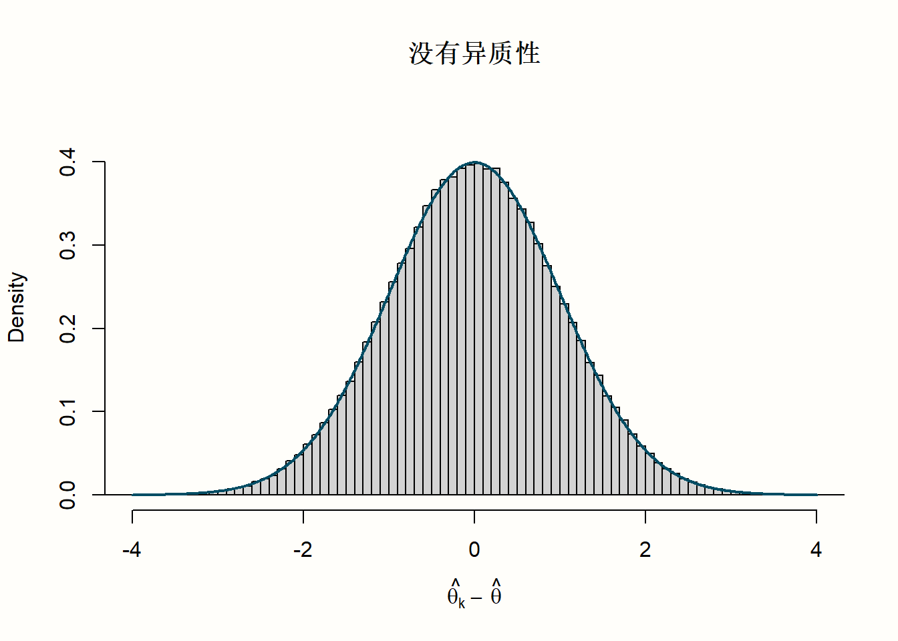
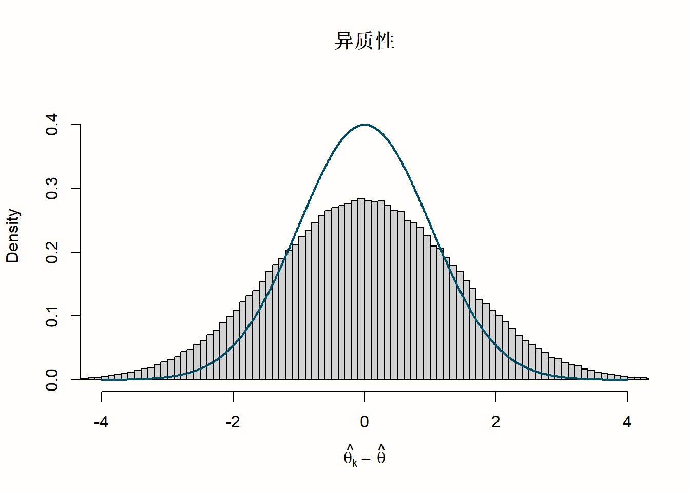
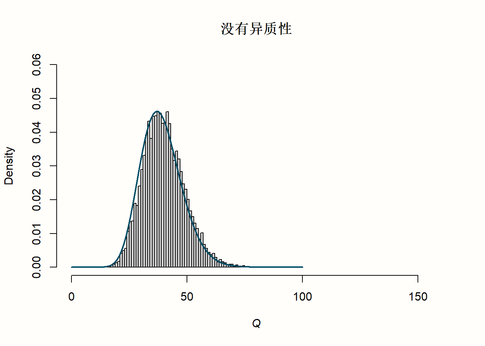
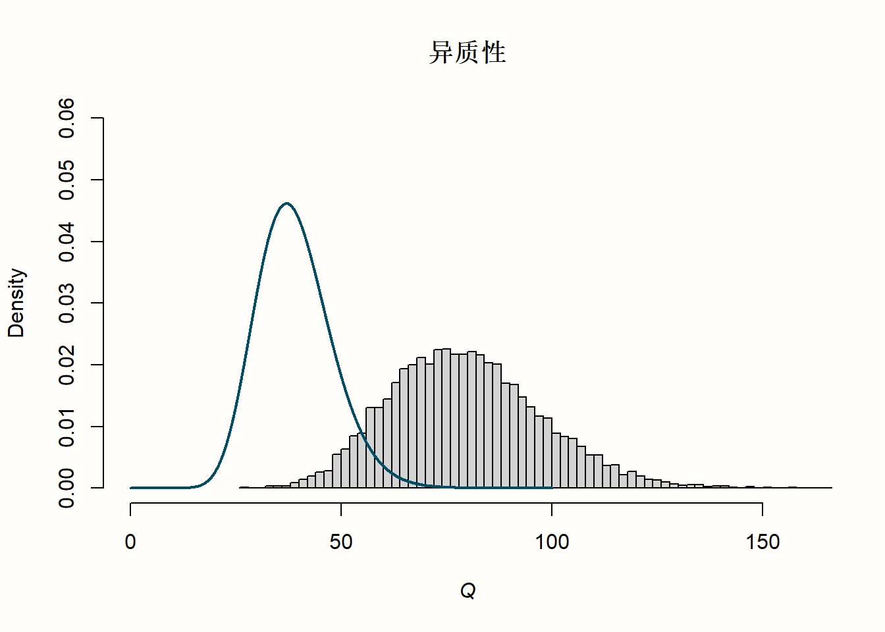

set.seed(123) # 需要重现结果
rnorm(n = 40, mean = 0, sd = 1)研究间异质性

至 此，我们已经学会了如何在荟萃分析中合并效应量。正如我们所见，固定效应模型和随机效应模型的目标都是将许多不同研究的效应综合成一个单一的数值。然而，只有当我们不是在比较苹果和橘子时，这样做才有意义。例如，可能存在这样一种情况：虽然我们在荟萃分析中计算出的总体效应很小，但仍然存在一些效应量非常高的离群值。这些信息在汇总效应中丢失了，我们不知道所有研究都产生了小的效应量，还是存在例外。
真效应量在荟萃分析中变化的程度称为研究间异质性。我们在上一章中已经简要地提到了这个概念，与随机效应模型相关联。随机效应模型假设研究间异质性导致研究的真效应量有所不同。因此，它包括对 \(\tau^2\) 的估计，\(\tau^2\) 量化了真效应中的这种方差。这允许计算合并效应，定义为真效应量分布的平均值。
即使研究之间存在很大的异质性，随机效应模型也总是允许我们计算合并效应量。然而，它并没有告诉我们这个合并效应是否可以以有意义的方式解释。在许多情况下，单独的合并效应并不能很好地代表我们荟萃分析中的数据。
想象这样一种情况：异质性非常高，这意味着真效应量（例如，某种治疗）的范围从高度正值到负值。如果这种荟萃分析的合并效应是正的，这并没有告诉我们有一些研究具有真正的负效应。治疗在某些研究中产生不利影响这一事实丢失了。
高异质性也可能是由于我们的数据中有两个或多个亚组的研究具有不同的真效应。这些信息对于研究人员来说非常有价值，因为它可能使我们能够找到某些效应较低或较高的环境。然而，如果我们孤立地看待合并效应，这个细节很可能会被忽略。在极端情况下，非常高的异质性可能意味着这些研究没有任何共同之处，并且根本没有意义去解释合并效应。
因此，荟萃分析师必须始终考虑被分析研究中的变化。每一个好的荟萃分析不仅应该报告一个总体效应，还应该说明这个估计的可信度。其中一个关键部分是量化和分析研究间的异质性。
在本章中，我们将更仔细地研究测量异质性的不同方法，以及如何解释它们。我们还将介绍一些工具，这些工具允许我们检测导致数据中异质性的研究。最后，我们将讨论在“真实世界”荟萃分析中解决大量异质性的方法。
异质性测量
在我们开始讨论异质性测量之前，我们首先应该明确异质性可能意味着不同的东西。例如，Rücker及其同事 [-@rucker2008undue] 区分了基线或设计相关的异质性和统计异质性。
当研究的人群或研究设计在研究之间存在差异时，就会出现基线或设计相关的异质性。当我们讨论“苹果和橘子”问题（第 @ref(pitfalls) 章）以及定义研究问题的方法（第 @ref(research-question) 章）时，我们已经讨论过这种类型的异质性。可以通过建立一个合适的 PICO 来先验地减少与设计相关的异质性，该 PICO 确定哪些类型的人群和设计有资格进行荟萃分析。
另一方面，统计异质性是一种可量化的属性，受荟萃分析中包含的效应量估计的离散程度和精度的影响。基线异质性可以导致统计异质性（例如，如果效应在包括的人群之间存在差异），但并非必须如此。荟萃分析也可能表现出较高的统计异质性，即使包括的研究本身实际上是相同的。在本指南（以及大多数其他荟萃分析文本）中，术语“研究间异质性”仅指统计异质性。
Cochran 的 \(Q\)
基于随机效应模型，我们知道有两种变异来源导致观察到的效应在研究之间有所不同。有抽样误差 \(\epsilon_k\)，以及由研究间异质性引起的误差 \(\zeta_k\)（第 @ref(rem) 章）。当我们想要量化研究间异质性时，困难在于确定有多少变异可以归因于抽样误差，有多少可以归因于真效应量差异。
传统上，荟萃分析师使用 Cochran 的 \(Q\) [@cochran1954some] 来区分研究的抽样误差和实际的研究间异质性。Cochran 的 \(Q\) 被定义为加权平方和 (WSS)。它使用每个研究的观察效应 \(\hat\theta_k\) 与汇总效应 \(\hat\theta\) 的偏差，并以研究方差的倒数 \(w_k\) 加权：
\[\begin{equation} Q = \sum^K_{k=1}w_k(\hat\theta_k-\hat\theta)^2 (\#eq:het1) \end{equation}\]
让我们仔细看看这个公式。首先，我们看到它使用了与合并效应量相同的逆方差加权类型。公式中的平均值 \(\hat\theta\) 是根据固定效应模型得出的合并效应。各个效应与汇总效应的偏差量（残差）被平方（因此该值始终为正），加权然后求和。结果值是 Cochran 的 \(Q\)。
由于 \(w_k\) 的加权， \(Q\) 的值不仅取决于 \(\hat\theta_k\) 与 \(\hat\theta\) 的偏差程度，还取决于研究的精度。如果效应量的标准误差非常低（因此精度非常高），即使与汇总效应的微小偏差也会被赋予更高的权重，从而导致更高的 \(Q\) 值。
\(Q\) 的值可以用来检查我们的数据中是否存在过度变异，这意味着比仅从抽样误差预期的变异更大。如果是这种情况，我们可以假设其余的变异是由于研究间异质性造成的。我们将用一个小的模拟来说明这一点。
在我们的模拟中，我们想要检查 \(Q\) 在两种不同情况下的行为：当没有研究间异质性时，以及当存在异质性时。让我们从没有异质性的情况开始。这意味着 \(\zeta_k=0\)，并且残差 \(\hat\theta_k-\hat\theta\) 仅是抽样误差 \(\epsilon_k\) 的产物。我们可以使用 rnorm 函数来模拟与某个平均效应量 \(\hat\theta\) 的偏差（假设它们遵循正态分布）。因为它们以 \(\hat\theta\) 为中心，我们可以预期这些“残差”的平均值为零（\(\mu\) = 0）。对于这个例子，让我们假设总体标准差为 \(\sigma=\) 1，这导致一个标准正态分布。
正态分布通常用 \(\mathcal{N}\) 表示，我们可以像这样象征残差是从 \(\mu=\) 0 和 \(\sigma=\) 1 的正态分布中抽取的：
\[\begin{equation} \hat\theta_k-\hat\theta \sim \mathcal{N}(0,1) (\#eq:het2) \end{equation}\]
让我们在 R 中尝试一下，并使用 rnorm 抽取 \(K\)=40 个效应量残差 \(\hat\theta_k-\hat\theta\)。
## [1] -0.56048 -0.23018 1.55871 0.07051 0.12929
## [6] 1.71506 0.46092 -1.26506 -0.68685 -0.44566
## [...]
因为标准正态分布是 rnorm 的默认值，所以我们也可以使用更简单的代码 rnorm(40)。
现在，让我们模拟重复多次抽取 \(n=\) 40 个样本的过程。我们可以使用 replicate 函数来实现这一点，我们告诉它重复 rnorm 调用一万次。我们将结果值保存在一个名为 error_fixed 的对象中。
set.seed(123)
error_fixed <- replicate(n = 10000, rnorm(40))我们继续第二个场景，其中我们假设除了抽样误差 \(\epsilon_k\) 之外，还存在研究间异质性（\(\zeta_k\) 误差）。我们可以通过添加对 rnorm 的第二次调用来模拟这一点，表示真效应量中的方差。在这个例子中，我们还假设真效应量遵循标准正态分布。
我们可以使用以下代码模拟具有 \(K\)=40 项研究和大量研究间异质性的一万个荟萃分析的残差：
set.seed(123)
error_random <- replicate(n = 10000, rnorm(40) + rnorm(40))现在我们已经模拟了有和没有异质性的荟萃分析的 \(\hat\theta_k-\hat\theta\) 残差，让我们对 \(Q\) 的值做同样的事情。对于这个模拟，我们可以通过假设每个研究的方差以及权重 \(w_k\) 都是1，从而简化 \(Q\) 的公式，导致 \(w_k\) 从等式中消失。这意味着我们只需要使用之前对 rnorm 的调用，对结果进行平方和求和，并重复这个过程一万次。
以下是该代码：
set.seed(123)
Q_fixed <- replicate(10000, sum(rnorm(40)^2))
Q_random <- replicate(10000, sum((rnorm(40) + rnorm(40))^2))\(Q\) 的一个重要特性是假设它（近似）遵循 \(\chi^2\) 分布。像加权平方和一样，\(\chi^2\) 分布只能取正值。它由其自由度（或 d.f.）定义；对于小的 d.f.，\(\chi^2\) 分布是右偏的，但是当自由度变得更大时，越来越接近正态分布。同时，自由度也是相应 \(\chi^2\) 分布的期望值或平均值。
假设 \(Q\) 将近似遵循具有 \(K-1\) 个自由度的 \(\chi^2\) 分布（其中 \(K\) 是我们荟萃分析中的研究数量）——如果效应量差异仅由抽样误差引起。这意味着具有 \(K-1\) 个自由度的 \(\chi^2\) 分布的平均值告诉我们仅通过抽样误差我们可以预期的 \(Q\) 值。
这个解释非常抽象，所以让我们看一下模拟值的分布，使其更具体。在下面的代码中，我们使用 hist 函数来绘制效应量“残差”和 \(Q\) 值的直方图。我们还在每个图中添加了一条线，显示理想化的分布。
可以使用 dnorm 函数生成正态分布的这种分布，并使用 dchisq 函数生成 \(\chi^2\) 分布，其中 df 指定自由度。
# 残差的直方图 (theta_k - theta)
# - 我们为 error_fixed 和 error_random 中的模拟值生成直方图
# - `lines` 用于添加蓝色正态分布。
hist(error_fixed,
xlab = expression(hat(theta[k])~-~hat(theta)), prob = TRUE,
breaks = 100, ylim = c(0, .45), xlim = c(-4,4),
main = "没有异质性")
lines(seq(-4, 4, 0.01), dnorm(seq(-4, 4, 0.01)),
col = "blue", lwd = 2)
hist(error_random,
xlab = expression(hat(theta[k])~-~hat(theta)), prob = TRUE,
breaks = 100,ylim = c(0, .45), xlim = c(-4,4),
main = "异质性")
lines(seq(-4, 4, 0.01), dnorm(seq(-4, 4, 0.01)),
col = "blue", lwd = 2)
# 模拟 Q 值的直方图
# - 我们为 Q_fixed 和 Q_random 中的模拟值生成直方图
# - `lines` 用于添加蓝色卡方分布。
# 首先，我们计算自由度 (k-1)
# 记住：每次模拟使用 k=40 项研究
df <- 40-1
hist(Q_fixed, xlab = expression(italic("Q")), prob = TRUE,
breaks = 100, ylim = c(0, .06),xlim = c(0,160),
main = "没有异质性")
lines(seq(0, 100, 0.01), dchisq(seq(0, 100, 0.01), df = df),
col = "blue", lwd = 2)
hist(Q_random, xlab = expression(italic("Q")), prob = TRUE,
breaks = 100, ylim = c(0, .06), xlim = c(0,160),
main = "异质性")
lines(seq(0, 100, 0.01), dchisq(seq(0, 100, 0.01), df = df),
col = "blue", lwd = 2)以下是 R 为我们绘制的图：




如果您发现我们用来生成绘图的代码难以理解，请不要担心。我们仅将其用于此模拟，这些不是作为实际荟萃分析的一部分会产生的绘图。
让我们回顾一下我们在四个直方图中看到的内容。在第一行中，我们看到了效应量“残差”的分布，有和没有异质性。正如我们所看到的，没有异质性的数据与我们在绘图中包含的标准正态分布线非常吻合。这是非常合乎逻辑的，因为数据是由 rnorm 生成的，假设了这种精确的分布。我们添加了额外异质性的数据不遵循标准正态分布。数据的离散度更大，导致具有较重尾部的分布。
现在，让我们探讨一下这与第二行中 \(Q\) 值的分布有何关系。当没有异质性时，\(Q\) 的值遵循一个特征性的右偏 \(\chi^2\) 分布。在图中，实线显示了具有 39 个自由度的 \(\chi^2\) 分布的形状（因为 d.f. = \(K-1\)，并且每次模拟使用 \(K\) = 40）。我们看到模拟数据很好地遵循了这条曲线。这不足为奇。我们已经了解到，当没有异质性时，\(Q\) 遵循具有 \(K-1\) 个自由度的 \(\chi^2\) 分布。在我们的模拟数据中，情况正是如此：变异仅由于抽样误差而存在。
对于我们的有异质性的示例，该分布看起来完全不同。模拟数据似乎根本不遵循预期的分布。值明显向右移动；分布的平均值大约高两倍。我们可以得出结论，当存在大量的研究间异质性时，\(Q\) 的值明显高于我们在没有异质性的假设下预期的 \(K-1\) 值。这并不奇怪，因为我们向数据添加了额外的变异以模拟研究间异质性的存在。
这是一个有些冗长的解释，但可能帮助我们更好地理解如何利用 \(Q\) 的统计特性。Cochran 的 \(Q\) 可用于检验荟萃分析中的变异是否显着超过我们可以在没有异质性的零假设下预期的数量。
这种异质性检验在荟萃分析中很常用，如果您回到第 @ref(pooling-es) 章，您会看到 {meta} 也会默认提供给我们。它通常被称为 Cochran 的 \(Q\) 检验，但实际上这是一种用词不当。Cochran 本人从未打算以这种方式使用 \(Q\) [@hoaglin2016misunderstandings]。
Cochran 的 \(Q\) 是一个非常重要的统计量，主要是因为其他常见的量化异质性的方法，例如 Higgins 和 Thompson 的 \(I^2\) 统计量和 \(H^2\)，都是基于它的。我们将在下一节中介绍这些测量方法。Cochran 的 \(Q\) 也被一些异质性方差估计器用来计算 \(\tau^2\)，最著名的是 DerSimonian-Laird 估计器1。
关于 (Q) 和 (Q) 检验的问题
虽然 (Q) 在荟萃分析中被广泛使用和报告，但它有一些缺陷。例如，Hoaglin [-@hoaglin2016misunderstandings] 认为，(Q) 遵循具有 (K-1) 个自由度的 (^2) 分布的假设并不能反映 (Q) 在荟萃分析中的实际行为，并且相关程序（例如 DerSimonian-Laird 方法）因此可能存在偏差。
一个更实际的担忧是，(Q) 会随着研究数量 (K) 的增加以及精度（即研究的样本量）的增加而增加。因此，(Q) 以及它是否显着高度取决于您的荟萃分析的大小，因此也取决于它的统计功效。
由此可见，我们在评估异质性时，不应仅依赖于 (Q) 检验的显着性。有时，荟萃分析师根据 (Q) 检验的显着性来决定是应用固定效应模型还是随机效应模型。由于我们在此处陈述的原因，强烈不建议使用这种方法。
Higgins & Thompson 的 \(I^2\) 统计量
\(I^2\) 统计量 [@higgins2002quantifying] 是另一种量化研究间异质性的方法，它直接基于 Cochran 的 \(Q\)。它被定义为效应量中不由抽样误差引起的变异百分比。 \(I^2\) 利用了 \(Q\) 在没有异质性的零假设下遵循具有 \(K-1\) 个自由度的 \(\chi^2\) 分布的假设。它以百分比量化了 \(Q\) 的观察值在多大程度上超过了没有异质性时的预期 \(Q\) 值（即 \(K-1\)）。
\(I^2\) 的公式如下所示：
\[\begin{equation} I^2 = \frac{Q-(K-1)}{Q} (\#eq:het3) \end{equation}\]
其中 \(K\) 是研究的总数。 \(I^2\) 的值不能低于 0%，因此如果 \(Q\) 恰好小于 \(K-1\)，我们只需使用 \(0\) 而不是负值2。
我们可以使用之前模拟的 \(Q\) 值来说明如何计算 \(I^2\)。首先，让我们随机选取 Q_fixed 中第十个模拟值，其中我们假设没有异质性。然后，我们使用上面的公式计算 \(I^2\)。
# 显示 Q 的第 10 个模拟的值
Q_fixed[10][1] 35.85787# 定义 k
k <- 40
# 计算 I^2
(Q_fixed[10] - (k-1))/Q_fixed[10][1] -0.08762746由于结果为负，我们向上舍入为零，从而得到 \(I^2\) = 0%。该值告诉我们，效应量中零百分比的变异是由于研究间异质性引起的。这与我们模拟中使用的设置一致。
现在，我们对 Q_random 中的第十个模拟值执行相同的操作。
(Q_random[10] - (k-1))/Q_random[10][1] 0.5692061我们看到此模拟的 \(I^2\) 值约为 50%，这意味着大约一半的变异是由于研究间异质性引起的。这也与我们的预期一致，因为此示例中的变异基于模拟的抽样误差和研究间异质性，各占一半。
通常使用 \(I^2\) 统计量来报告荟萃分析中的研究间异质性，并且默认情况下，我们在 {meta} 中获得的输出中包含 \(I^2\)。该统计量的普及可能与其存在“经验法则”相关，说明我们如何解释它 [@higgins2002quantifying]：
\(I^2\) = 25%: 低异质性
\(I^2\) = 50%: 中等异质性
\(I^2\) = 75%: 大量异质性。
\(H^2\) 统计量
\(H^2\) 统计量 [@higgins2002quantifying] 也来自 Cochran 的 \(Q\)，并且与 \(I^2\) 相似。它描述了观察到的变异（由 \(Q\) 测量）与由于抽样误差引起的预期方差的比率：
\[\begin{equation} H^2 = \frac{Q}{K-1} (\#eq:het4) \end{equation}\]
\(H^2\) 的计算比 \(I^2\) 的计算略微优雅一些，因为当 \(Q\) 小于 \(K-1\) 时，我们不必人为地校正其值。当没有研究间异质性时，\(H^2\) 等于 1（或更小）。大于 1 的值表示存在研究间异质性。
与 \(I^2\) 相比，在已发表的荟萃分析中发现报告该统计量的频率要低得多。但是，默认情况下，{meta} 的荟萃分析函数的输出中也包含 \(H^2\)。
异质性方差 \(\tau^2\) 和标准差 \(\tau\)
我们在第 @ref(rem) 章中已经详细讨论了异质性方差 \(\tau^2\)。正如我们在那里提到的，\(\tau^2\) 量化了我们数据基础的真效应量的方差。当我们取 \(\tau^2\) 的平方根时，我们得到 \(\tau\)，它是真效应量的标准差。
\(\tau\) 的一个很大的优点是它以与效应量度量相同的尺度表示。这意味着我们可以像解释一级研究中样本年龄的平均值和标准差一样来解释它。 \(\tau\) 的值告诉我们一些关于真效应量的范围的信息。
例如，我们可以通过将 \(\tau\) 乘以 1.96 来计算真效应量的 95% 置信区间，然后从合并效应量中加上和减去该值。我们可以使用我们在第 @ref(pre-calculated-es) 章中计算的 m.gen 荟萃分析来尝试一下。
让我们再次看看该荟萃分析中的合并效应和 \(\tau\) 估计值是什么：
# 合并效应
m.gen$TE.random[1] 0.5771158# tau 的估计
m.gen$tau[1] 0.2863311我们看到 \(g=\) 0.58 和 \(\tau=\) 0.29。基于这些数据，我们可以计算 95% 真效应量置信区间的下限和上限：0.58 \(-\) 1.96 \(\times\) 0.29 = 0.01 和 0.58 \(+\) 1.96 \(\times\) 0.29 = 1.15。
“我们不确定性的不确定性是什么？”：围绕 \(\tau^2\) 计算置信区间
量化我们研究间异质性方差估计的不确定性的方法（即围绕 \(\tau^2\) 的置信区间）仍然是一个正在进行的研究领域。有几种方法是可能的，它们的充分性取决于 \(\tau^2\) 估计器的类型（第 @ref(tau-estimators) 章）。
{meta} 包遵循 Veronikki [-@veroniki2016methods] 的建议，并对大多数估计器使用 \(Q\)-Profile 方法 [@viechtbauer2007confidence]。
\(Q\)-Profile 方法基于更改后的 \(Q\) 版本，即广义 \(Q\)-statistic \(Q_{\text{gen}}\)。虽然标准版本的 \(Q\) 使用基于固定效应模型的合并效应，但 \(Q_{\text{gen}}\) 基于随机效应模型。它使用根据随机效应模型得出的总体效应 \(\hat\mu\) 来计算偏差，以及基于随机效应模型的权重：
\[\begin{equation} Q_{\text{gen}} = \sum_{k=1}^{K} w^*_k (\hat\theta_k-\hat\mu)^2 (\#eq:het5) \end{equation}\]
其中 \(w^*_k\) 是随机效应权重（参见第 @ref(tau-estimators) 章）：
\[\begin{equation} w^*_k = \frac{1}{s^2_k+\tau^2} (\#eq:het6) \end{equation}\]
\(Q_{\text{gen}}\) 也被证明遵循具有 \(K-1\) 个自由度的 \(\chi^2\) 分布。我们可以将广义 \(Q\) 统计量视为一个函数 \(Q_{\text{gen}}(\tau^2)\)，该函数为更高或更低的 \(\tau^2\) 值返回不同的 \(Q_{\text{gen}}\) 值。此函数的结果具有 \(\chi^2\) 分布。
由于 \(\chi^2\) 分布遵循清晰可预测的模式，因此很容易确定具有例如 95% 覆盖率的置信区间。我们只需要根据其 \(K-1\) 个自由度获得第 2.5 个百分位数和第 97.5 个百分位数的 \(\chi^2\) 值。在 R 中，可以使用分位数函数 qchisq 轻松完成此操作，例如：qchisq(0.975, df=5)。
\(Q\)-Profile 方法利用这种关系，使用迭代过程（所谓的“分析”）计算围绕 \(\tau^2\) 的置信区间。在这种方法中，重复计算 \(Q_{\text{gen}}(\widetilde{\tau}^2)\)，同时增加 \(\tau^2\) 的值，直到达到基于 \(\chi^2\) 分布的置信区间的下限和上限的预期值。
可以通过参数 method.tau.ci = "QP" 在 {meta} 函数中指定 \(Q\)-Profile 方法。这是默认设置，这意味着我们不必手动添加此参数。唯一的例外是当我们使用 DerSimonian-Laird 估计器 (method.tau = "DL") 时。在这种情况下，会自动使用 Jackson [-@jackson2013confidence] 的另一种方法（我们可以通过指定 method.tau.ci = "J" 手动执行此操作）。
通常，没有必要偏离 {meta} 的默认行为，但对于其他人来说，报告已使用哪种方法在您的荟萃分析中计算围绕 \(\tau^2\) 的置信区间可能会有所帮助。
我应该使用哪种测量方法？
当我们在荟萃分析中评估和报告异质性时，我们需要一种稳健的测量方法，并且不会受到统计功效的过度影响。Cochran 的 \(Q\) 会随着研究数量的增加以及精度（即研究的样本量）的增加而增加。
因此，\(Q\) 以及它是否显着高度取决于您的荟萃分析的大小，因此也取决于它的统计功效。因此，我们在评估研究间异质性时，不应仅依赖于 \(Q\)，尤其是 \(Q\) 检验。
另一方面，\(I^2\) 对分析中研究数量的变化不敏感。它相对容易解释，并且许多研究人员都了解它的含义。总的来说，在我们的荟萃分析报告中包含 \(I^2\) 作为异质性测量方法并不是一个坏主意，特别是如果我们还为此统计量提供置信区间，以便其他人可以评估估计的精确度。
然而，尽管 \(I^2\) 在文献中被广泛使用，但它也不是一个完美的异质性度量。它不是异质性的绝对度量，并且它的值仍然在很大程度上取决于所包含研究的精度 [@borenstein2017basics; @rucker2008undue]。正如之前所说，\(I^2\) 仅仅是不由抽样误差 \(\epsilon\) 引起的变异百分比。如果我们的研究变得越来越大，则抽样误差趋向于零，同时，\(I^2\) 趋向于 100%——仅仅是因为这些研究具有更大的样本量。
因此，仅依赖 \(I^2\) 也不是一个好的选择。由于 \(H^2\) 的行为与 \(I^2\) 相似，因此相同的注意事项也适用于此统计量。
另一方面，\(\tau^2\) 和 \(\tau\) 的值对研究数量及其精度不敏感。随着研究数量及其规模的增加，它不会系统地增加。然而，通常很难从实际角度解释 \(\tau^2\) 的相关性。例如，假设我们发现研究中真效应量的方差为 \(\tau^2=\) 0.08。我们自己和其他人通常很难确定这种方差量是否有意义。
预测区间 (PI) 是克服此限制的好方法 [@inthout2016plea]。预测区间为我们提供了一个范围，根据目前的证据，我们可以预期未来研究的效应会落入该范围。
假设我们的预测区间完全位于支持干预的“正”侧。这意味着，尽管效应各不相同，但预计干预在未来我们研究的背景下是有益的。如果预测区间包括零，我们可以不太确定这一点，但应该注意的是，广泛的预测区间非常常见。
为了计算围绕总体效应 \(\hat\mu\) 的预测区间，我们同时使用估计的研究间异质性方差 \(\hat\tau^2\) 和合并效应的标准误差 \(SE_{\hat\mu}\)。我们对平方标准误差和 \(\hat\tau^2\) 值求和，然后取结果的平方根。这使我们获得了预测区间的标准差 \(SD_{\text{PI}}\)。假设预测范围的 \(t\) 分布具有 \(K-1\) 个自由度，这就是为什么我们将 \(SD_{\text{PI}}\) 乘以 \(t_{K-1}\) 的第 97.5 个百分位数值，然后从 \(\hat\mu\) 中加上和
Footnotes
DerSimonian-Laird 方法使用 \(\hat\tau^2 = \dfrac{Q-(K-1)}{\sum_{k=1}^{K}w_k-\frac{\sum_{k=1}^Kw^2_k}{\sum_{k=1}^Kw_k}}\) 估计异质性方差，当 \(Q<(K-1)\) 时，\(\hat\tau^2 := 0\)；另见第 @ref(rem) 和 @ref(tau-estimators) 章。↩︎
请注意，虽然 \(I^2\) 通常使用上面的公式计算，但并非所有软件都遵循此定义。例如，在 {metafor} 中，它的值是使用估计的研究间异质性 \(\tau^2\) 推导出来的（参见 此处），因此：\[I^2 = \frac{\hat{\tau}^2}{\hat{\tau}^2 + \tilde{v}};\] 其中：\[\tilde{v} = \frac{(K-1) \sum w_k}{(\sum w_k)^2 - \sum w_k^2}\] 是根据我们样本中所有研究 \(k\) 的权重 \(w_k\) 计算得出的“平均”或“典型”抽样方差（参见第 @ref(fem) 章）。与之前显示的公式相比，这种计算 \(I^2\) 的方式更容易看出 \(I^2\) 是异质性的 相对 度量。它取决于“典型”的研究内方差 \(\tilde{v}\)，该方差可能因荟萃分析而异。我们在第 @ref(het-measure-which) 章中详细阐述了这一点。另请注意，这些不同的公式有时可以解释为什么荟萃分析工具可以返回 不同的值 \(I^2\)，即使合并了相同的数据。↩︎